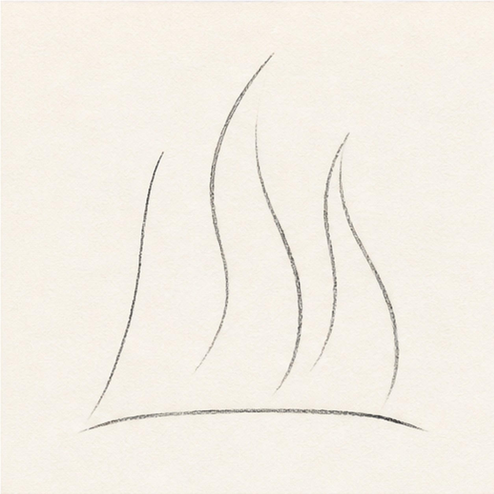
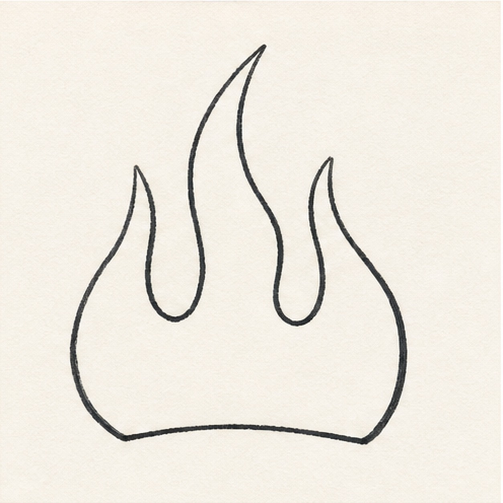
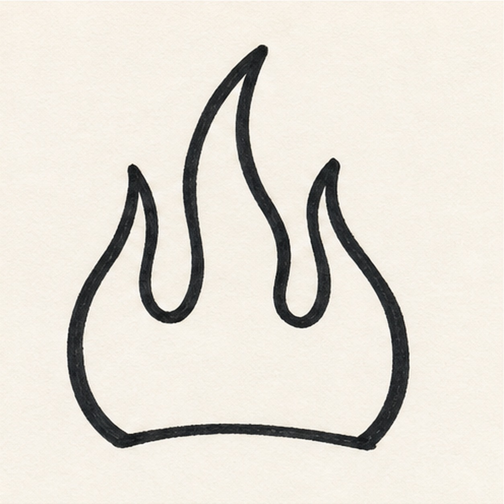
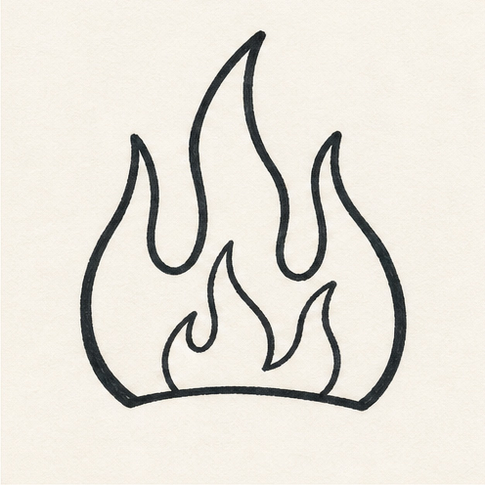
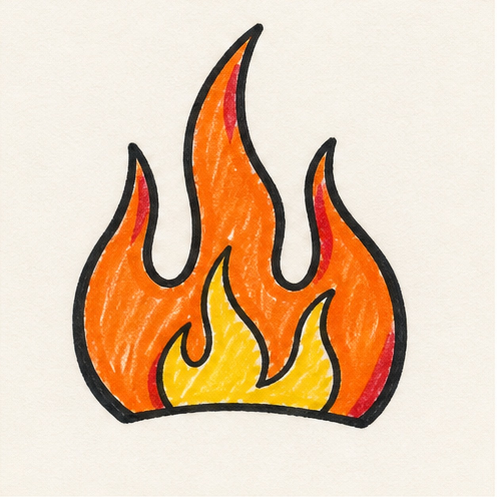

Felt-tip marker mode
Let's doodle flames
Use loose curves first, then switch to confident marker outlines and bright fills.
-
01

Sweep the flame paths
Draw a low curved baseline, then pull three tall swooping paths upward like stretched S-curves.
Doodle tip: Let the middle path be tallest. The side paths can lean outward to make the shape feel fast.
-
02

Connect the outside shape
Use the guide paths to make one connected flame outline with pointed tips and rounded dips between them.
Doodle tip: Keep the valleys round. Sharp valleys make the flames look thorny instead of hot rod-style.
-
03

Thicken the outline
Trace the outside shape with a bold black marker, pressing slowly around the curves and points.
Doodle tip: A slightly uneven marker edge is fine. Aim for energy, not perfect symmetry.
-
04

Add inner flames
Draw two smaller flame tongues inside the big shape, letting them rise from the baseline and curve with the outer flames.
Doodle tip: Leave enough orange space around the inner flames so the yellow fill will stand out.
-
05

Fill with marker color
Fill the outer flame with orange, color the inner shapes yellow, and add a few red accents along the outside edges.
Doodle tip: Color in short strokes and let a few streaks show. Marker texture makes the doodle feel handmade.
-
06
Punch up the doodle
Go back over the black outline, strengthen the orange and yellow fill, and clean only the edges you already drew.
Doodle tip: Do not add new flame shapes at the end. The final pass should make the marker drawing louder.